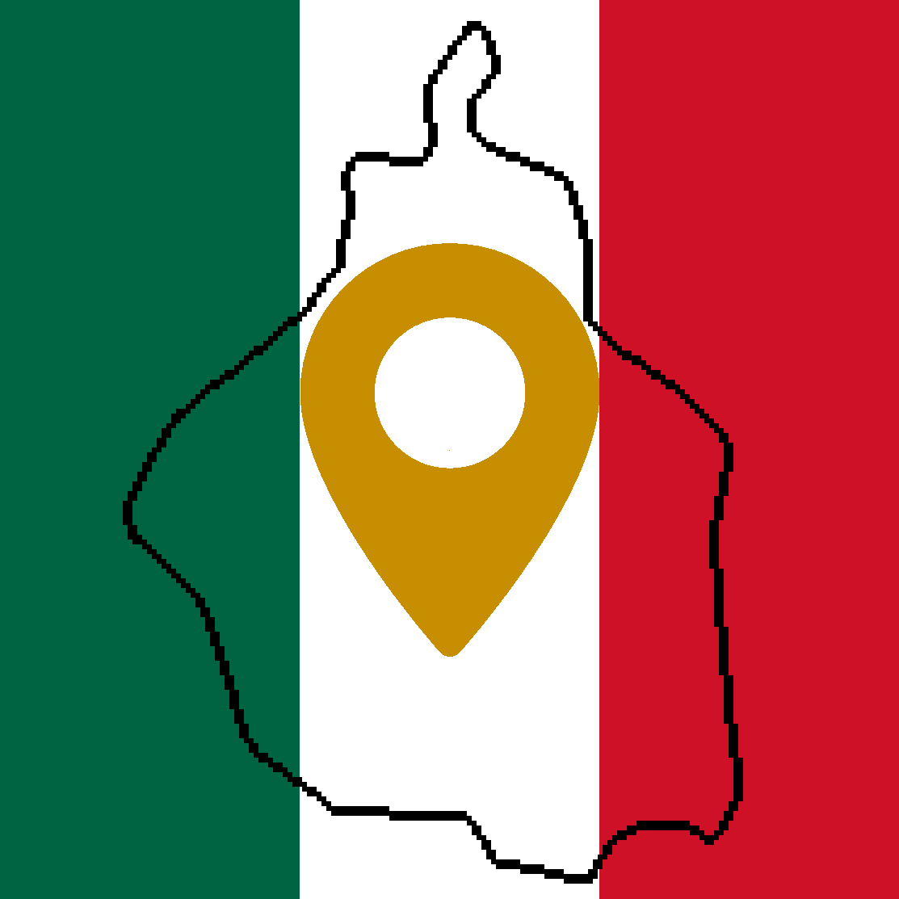
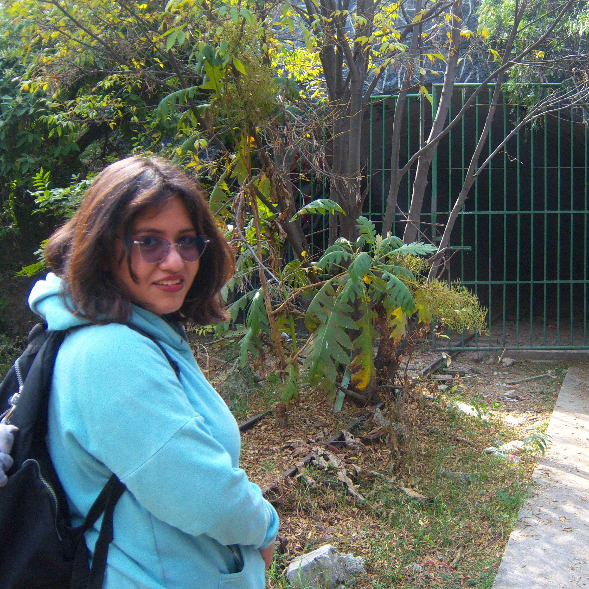
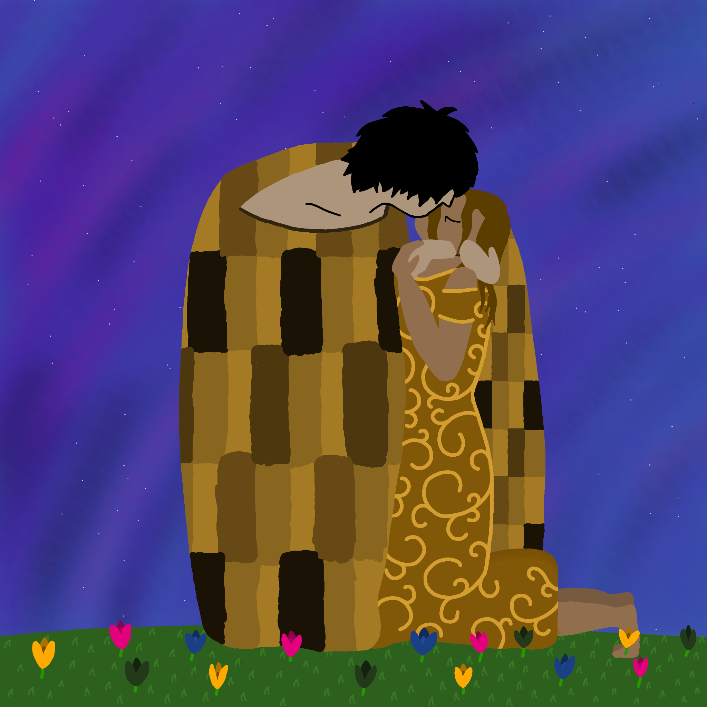
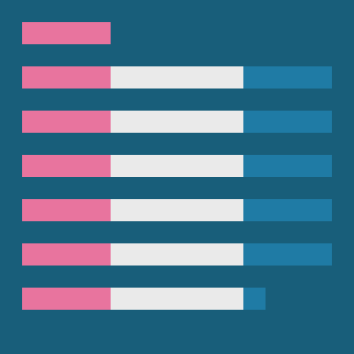
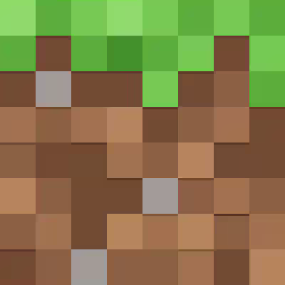

La Secretaría de Cultura y el departamento de tecnologías del Gobierno de Urbenia se complacen en presentar este apartado en la página web para preservar y habilitar mundialmente las aplicaciones, arte y compilaciones de música que el país ha realizado a lo largo de los años, con la finalidad de poder hacer accesibles todos estos recursos por más de un medio (como lo pueden ser publicaciones en las redes sociales del gobierno o en las tiendas de aplicaciones).
Para poder acceder a cada uno de estos recursos solo toca la imagen en cada categoría y te llevará o descargará el elemento correspondiente.
Arte y Propaganda
Aplicaciones

¿Alguna vez has querido salir en la Ciudad de México y no sabes a dónde ir?
Con 'Explora CDMX' esos días quedaron atrás porque esta aplicación recopila lugares interesantes por tí y te los muestra con una sencilla interfaz en dónde encontrarás una imagen, una descripción corta, su ubicación y horario, y si tiene un sitio web, ¡También!
Agenda ya tu proxima salida en minutos.
Música
Escuchar música es parte esencial de Urbenia, asi que se creó esta playlist con la intención de representar los sentimientos de toda una nación.
En esta playlist encontrarás géneros musicales variados para casi cada ocasión, siéntete libre de explorar las 68 horas y 33 minutos de pura música.

Este álbum se lo dediqué y regalé a una de mis mejores amigas en formato físico. No pensaba compartirlo aqui por ser un regalo personal, sin embargo, he considerado que la música debería compartirse y no ocultarse, además, creo que el hecho de compartirlo no hará que pierda la razón de ser puesto que sólo ella y yo sabemos lo que significa.
Si bien el álbum no es para nadie que esté leyendo esto, espero que lo disfruten.

Este álbum fue un regalo de San Valentin aún más personal pero para la misma persona que el anterior. Tampoco pensaba compartirlo, pero, llegando a la misma conclusión anterior, considero que ustedes pueden darle su propia interpretación y significado.
Espero sea igual de especial para ustedes como para mi y que lo disfruten.
Historias

Un escritor muy famoso de Urbenia es invitado a presentar sus nuevas obras en la capital, pero un infortunio le hace encontrarse con el Gran Desconocido.
Torrente escribió esta historia corta para una clase de preparatoria, y aunque mediocre o mal hecha, sirvió como inspiración para comenzar a escribir cosas para Urbenia y hacer de este proyecto algo más grande.
Mundos de Minecraft

Descarga ya el mundo para Minecraft: Bedrock Edition del primer servidor de Urbenia, el cuál fue propuesto por nuestra presidenta Paty para que fuera exclusivamente sobre Urbenia.
Así que descárgalo explora el mundo que juntos construimos, visita los antiguos asentamientos de los -- (antes Azúex), los -- (antes Bines), los -- (antes Cígos), los -- (antes Modías), los -- (antes Mungos), los -- (antes Pelesées) y, aunque en este mundo no estan, los -- (antes Ultiones).
Copyright Urbenia™ Derechos Reservados